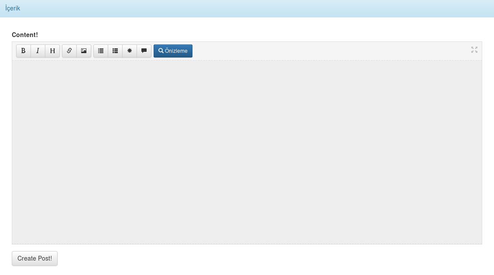

Django Markdown Editör Kurulumu
Okuldaki işler harici evde de kişisel olarak python ve arkadaşlarının icatları ile ilgileniyorum. Bu süreçte django ile kendi blog sistemimi yazmaya karar verdim. Ancak editör öyle kötüydü ki (hiç yok klasik textarea :D) markdown editör aramaya koyuldum. Daha önce Laravel ile yazdığım blog sisteminde de kullandığım editör geldi aklıma.
Taufan Aditya tarafından yazılan bootstrap-markdown kullanmıştım. Neyse bu işin görsel yüzü. Ancak arkada hala çözümlenmeyi bekleyen markdown kuralları vardı. Bunun için bulabildiğim en uygun markdown eklentisi Kirill Klenov tarafından yazılan django_markdown eklentisiydi. Neyse bulduk ettik bir şekilde. Sıra kuruluma geliyor.Öncelikle editör entegrasyonunu yapalım. Şu linkten editör dosyalarını indirelim. İlgili klasöre çıkaralım. Statik dosyaların static altında olduğunu varsayarak yaptığınızı düşünelim. Ben şöyle yaptım:
{ % static "markdown/bootstrap_markdown.css" % }
Bu şu anlama geliyor: static klasörü altındaki markdown klasörünün içinde ilgili css dosyasını çek. Bu kodu şöyle kullanıyoruz:
Şimdi artık JavaScript dosyalarını ekleyebiliriz. Bu sefer yine markdown klasörü altında JS klasörü olduğunu düşünerek şöyle çağıralım:
<script src="//code.jquery.com/jquery-1.12.0.min.js"></script> <script type="text/javascript" src='{ % static "markdown/js/bootstrap-markdown.js" % }'></script> <script type="text/javascript" src='{ % static "markdown/js/bootstrap-markdown.tr.js" % }'></script> <script type="text/javascript" src='{ % static "markdown/js/bootstrap.min.js" % }'></script> <script type="text/javascript" src='{ % static "markdown/js/markdown.js" % }'></script> <script type="text/javascript" src='{ % static "markdown/js/to-markdown.js" % }'></script>
İlk kısımda jquery çağırımını yaptık. Sonra bootstrap-markdown ve türkçe dil eklentisini çağırdık. Kısacası gerekli dosyaları çağırdık. TextArea’mıza bakarsak şöyle bir MD editör göreceğiz:

Okey artık gerekli stil vs. dosyalarını ekledik. Şimdi django’da bir adet textareamız var. Bunu uygulamanın forms.py dosyasında oluşturdunuz zaten. Eğer yok ise örnek şöyle olacak:
from django import forms from .models import Post class PostForm(forms.ModelForm): class Meta: model = Post fields = [ "content", ]
Burada gördüğümüz model olayını vs. anlatmıyorum ancak fields content adında bir değer almış. Bu benim formum için bir değer. Bunu template dosyasına şöyle ekliyoruz:
{{ form.content }}
Bu bilgileri zaten biliyorsunuz diye varsayıyorum üzerinde fazla durmuyorum. Şimdi bu content için widgets ile markdown attribute eklememiz lazım.Şöyle yapalım onu da:
widgets = { 'content': forms.Textarea(attrs={'rows': 20, 'cols': 120, 'data-provide': 'markdown'}), }
Bu aslında klasik olarak şöyle oluyor. Herhangi bir html elementinin özellikleri gibi düşünün. Burada kolayca sözlük olarak ekliyoruz. row ve cols bize html’den yabancı gelmiyor. Burası textarea boyutu ile alakalı. Sonra gelen kısım data-provide ve markdown kısmı önemli. Bu kısımda data-provide özelliğine markdown ataması yapıyor. Yani yukarıdaki kısımlar şöyle bir şey oluşturuyor:
<textarea cols="120" data-provide="markdown" id="id_content" name="content" rows="20"></textarea>
Buradaki id_content kısmı django tarafından otomatik oluşturulmuş durumda. Siz yukarıdaki gibi widgets’a ekstra değer ekleyerek özelleştirebilirsiniz. cols ve rows gördüğümüz gibi zaten. Dikkatimizi çeken sanırım data-provide kısmıydı. Onun da nasıl işlendiğini gördük. Son olarak da name kısmı fields’a belirttiğimiz alandan geliyor. Görsel arayüz bu kadar sanırım.
Şimdi gelelim önemli kısma. Öncelikle django_markdown kurulumunu yapalım:
pip install django-markdown
Artık kurulum yapılı vaziyette. Ancak bunu kurulu uygulamalara eklememiz gerekiyor. Bunun için settings.py dosyamızın içindeki INSTALLED_APPS listesinin sonuna bir ekleme yapıyoruz. Kısacası şöyle:
INSTALLED_APPS = [ 'django.contrib.admin', 'django.contrib.auth', 'django.contrib.contenttypes', 'django.contrib.sessions', 'django.contrib.messages', 'django.contrib.staticfiles', 'posts', 'django_markdown', ]
İşlemler bitti. Ancak son olarak kullanıcıya markdown ile yazılan yazının çözümlenmiş halini göstermeliyiz. Senaryomuza göre diyelim ki post_view.html adında bir dosya ile karşınızdaki kişiye içeriği sunuyorsunuz. Bunu yaparken de şöyle sunuyorsunuz: diyelim. O zaman bunun sonuna bir template tag eklememiz gerekiyor.
Öncelikle post_view.html dosyasının en üstüne, extendsin bir altına şunu eklemelisiniz {% load django_markdown %} bu sayede artık django-markdown template tag'ini de çağırdık. Şimdi kullanıcıya sunduğumuz içeriğe django_markdown tagini de ekleyelim. {{ post.content|markdown }} evet bu kadar. Yazınızı yayınlayıp sonucu görebilirsiniz.
Hatalı ve eksik anlatımım var ise özür dilerim şimdiden. Eksik olan noktaları bildirebilirsiniz. İyi çalışmalar.
Comments
Comments powered by Disqus